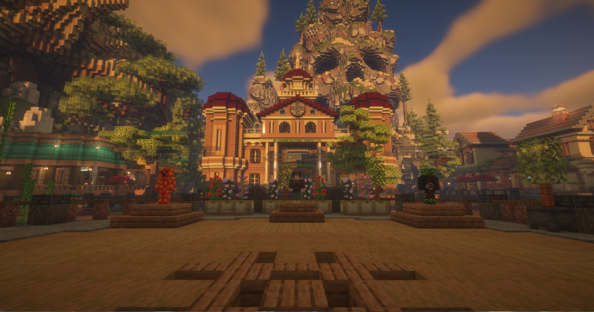
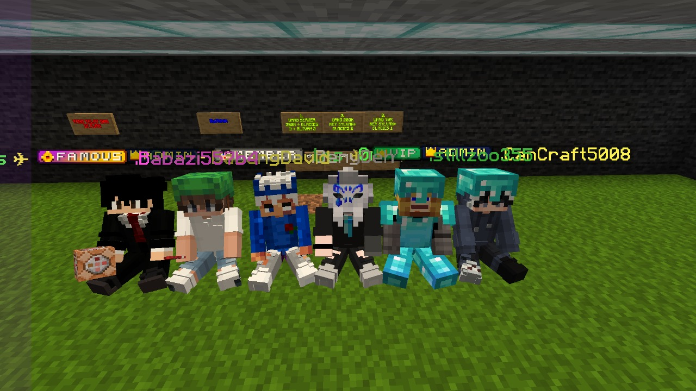
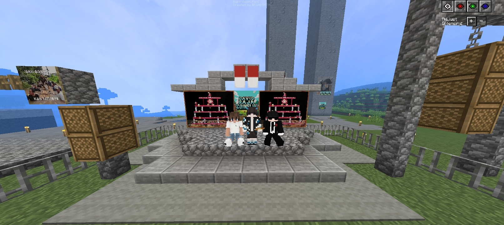
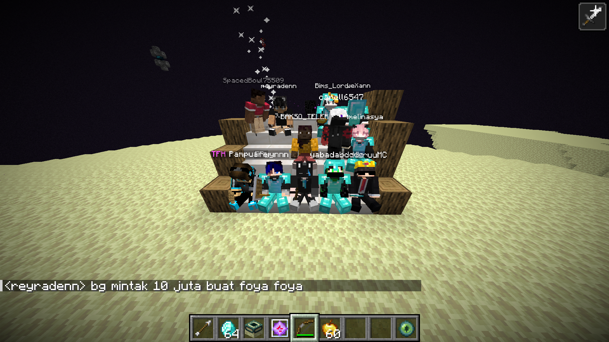
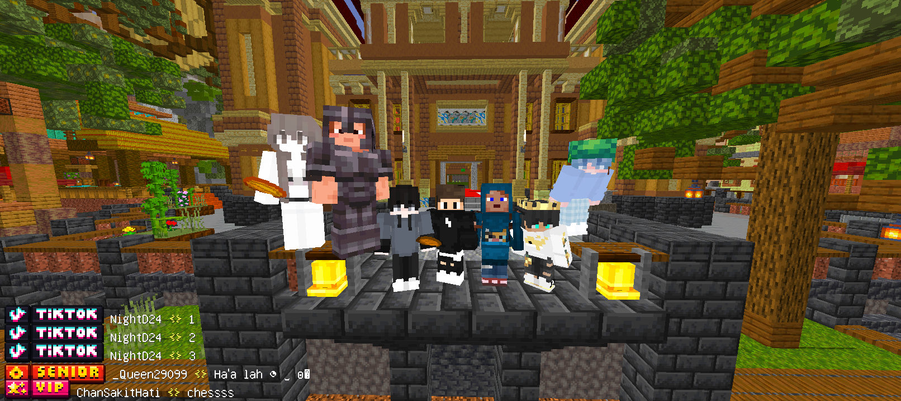

AetherSMP adalah server terbaik yang pernah saya mainkan! Komunitasnya sangat ramah dan fitur-fitur servernya sangat menarik.
Takiji
Anggota sejak 2024
Ekonomi servernya sangat seimbang dan plugin jobsnya membuat game menjadi lebih menantang. Saya suka sistem skill yang unik!
Zenity
Anggota sejak 2023
Event-event yang diadakan admin selalu seru dan menarik. Saya tidak pernah bosan bermain di server ini!
BabangDavid
Anggota sejak 2024
Status Server
Status Server
Status Koneksi:Memeriksa...
Pemain Online:- / -
Versi Server:-
Latensi:- ms
Waktu Minecraft:--:--
Lokasi:Indonesia
Platform:Java & Bedrock
Terakhir Diperbarui:-
MOTD
Memuat pesan server...
Pemain Aktif
Total Pemain Online:0
Kapasitas Server:-
Toko Server
Novice
Rp 20.000
Lifetime
/nickname — Mengubah nama tampilan agar terlihat lebih unik.
/hat — Memakai item yang sedang dipegang sebagai topi.
/suicide — Membunuh karakter secara instan.
/kits novice — Mengambil item kit sesuai dengan rank.
15K Block Limit – Total luas lahan yang bisa diklaim dengan RedProtect.
10x Claim Land Limit – Total untuk mengamankan wilayah menggunakan plugin RedProtect.
10x Sethome – Menyimpan lokasi favorit yang bisa diakses dengan cepat lewat perintah /home (nama rumah).
4x Jobs & 4x Quest – Menjalankan pekerjaan dan mengambil misi sekaligus untuk memaksimalkan penghasilan dan progres permainan.
Eclipsen
Rp 35.000
Lifetime
/nickname — Mengubah nama tampilan agar terlihat lebih unik.
/hat — Memakai item yang sedang dipegang sebagai topi.
/suicide — Membunuh karakter secara instan.
/stonecutter — Membuka stonecutter dari mana saja.
/workbench — Mengakses crafting table tanpa perlu blok fisik.
/realname — Menampilkan nama asli pemain (jika pakai nickname).
/kits eclipsen — Mengambil item kit sesuai dengan rank.
20K Block Limit – Total luas lahan yang bisa diklaim dengan RedProtect.
20x Claim Land Limit – Total untuk mengamankan wilayah menggunakan plugin RedProtect.
15x Sethome – Menyimpan lokasi favorit yang bisa diakses dengan cepat lewat perintah /home (nama rumah).
5x Jobs & 5x Quest – Menjalankan pekerjaan dan mengambil misi sekaligus untuk memaksimalkan penghasilan dan progres permainan.
All Novice Features
Onyxguard
Rp 50.000
Lifetime
/nickname — Mengubah nama tampilan agar terlihat lebih unik.
/hat — Memakai item yang sedang dipegang sebagai topi.
/suicide — Membunuh karakter secara instan.
/stonecutter — Membuka stonecutter dari mana saja.
/workbench — Mengakses crafting table tanpa perlu blok fisik.
/realname — Menampilkan nama asli pemain (jika pakai nickname).
/anvil — Mengakses anvil tanpa harus membuat atau mencarinya.
/loom — Membuka loom dari jarak jauh untuk desain banner.
/enderchest — Membuka ender chest tanpa perlu blok fisik.
/lightning — Menyerang lokasi dengan petir; efek visual keren.
/kits onyxguard — Mengambil item kit sesuai dengan rank.
30K Block Limit – Total luas lahan yang bisa diklaim dengan RedProtect.
25x Claim Land Limit – Total untuk mengamankan wilayah menggunakan plugin RedProtect.
30x Sethome – Menyimpan lokasi favorit yang bisa diakses dengan cepat lewat perintah /home (nama rumah).
7x Jobs & 5x Quest – Menjalankan pekerjaan dan mengambil misi sekaligus untuk memaksimalkan penghasilan dan progres permainan.
All Eclipsen Features
Aetherial
Rp 70.000
Lifetime
/nickname — Mengubah nama tampilan agar terlihat lebih unik.
/hat — Memakai item yang sedang dipegang sebagai topi.
/suicide — Membunuh karakter secara instan.
/stonecutter — Membuka stonecutter dari mana saja.
/workbench — Mengakses crafting table tanpa perlu blok fisik.
/realname — Menampilkan nama asli pemain (jika pakai nickname).
/anvil — Mengakses anvil tanpa harus membuat atau mencarinya.
/loom — Membuka loom dari jarak jauh untuk desain banner.
/enderchest — Membuka ender chest tanpa perlu blok fisik.
/lightning — Menyerang lokasi dengan petir; efek visual keren.
/cartographytable — Membuka cartography table dari jarak jauh.
/grindstone — Mengakses grindstone untuk hapus enchant dan repair.
/fly — Mengaktifkan mode terbang untuk mobilitas yang lebih baik.
/near — Melihat daftar pemain terdekat di sekitarmu.
/depth — Menampilkan koordinat kedalaman (Y-level) saat ini.
/kits aetherial — Mengambil item kit sesuai dengan rank.
50K Block Limit – Total luas lahan yang bisa diklaim dengan RedProtect.
30x Claim Land Limit – Total untuk mengamankan wilayah menggunakan plugin RedProtect.
45x Sethome – Menyimpan lokasi favorit yang bisa diakses dengan cepat lewat perintah /home (nama rumah).
9x Jobs & 9x Quest – Menjalankan pekerjaan dan mengambil misi sekaligus untuk memaksimalkan penghasilan dan progres permainan.
All Onyxguard Features
Thornking
Rp 90.000
Lifetime
/nickname — Mengubah nama tampilan agar terlihat lebih unik.
/hat — Memakai item yang sedang dipegang sebagai topi.
/suicide — Membunuh karakter secara instan.
/stonecutter — Membuka stonecutter dari mana saja.
/workbench — Mengakses crafting table tanpa perlu blok fisik.
/realname — Menampilkan nama asli pemain (jika pakai nickname).
/anvil — Mengakses anvil tanpa harus membuat atau mencarinya.
/loom — Membuka loom dari jarak jauh untuk desain banner.
/enderchest — Membuka ender chest tanpa perlu blok fisik.
/lightning — Menyerang lokasi dengan petir; efek visual keren.
/cartographytable — Membuka cartography table dari jarak jauh.
/grindstone — Mengakses grindstone untuk hapus enchant dan repair.
/fly — Mengaktifkan mode terbang untuk mobilitas yang lebih baik.
/near — Melihat daftar pemain terdekat di sekitarmu.
/depth — Menampilkan koordinat kedalaman (Y-level) saat ini.
/feed — Mengisi bar lapar hingga penuh.
/ptime — Mengatur waktu pribadi untuk tampilan (siang/malam).
/pweather — Mengatur cuaca pribadi, hanya untukmu.
/kits thornking — Mengambil item kit sesuai dengan rank.
80K Block Limit – Total luas lahan yang bisa diklaim dengan RedProtect.
35x Claim Land Limit – Total untuk mengamankan wilayah menggunakan plugin RedProtect.
60x Sethome – Menyimpan lokasi favorit yang bisa diakses dengan cepat lewat perintah /home (nama rumah).
11x Jobs & 11x Quest – Menjalankan pekerjaan dan mengambil misi sekaligus untuk memaksimalkan penghasilan dan progres permainan.
All Aetherial Features
Luminforge
Rp 130.000
Lifetime
/nickname — Mengubah nama tampilan agar terlihat lebih unik.
/hat — Memakai item yang sedang dipegang sebagai topi.
/suicide — Membunuh karakter secara instan.
/stonecutter — Membuka stonecutter dari mana saja.
/workbench — Mengakses crafting table tanpa perlu blok fisik.
/realname — Menampilkan nama asli pemain (jika pakai nickname).
/anvil — Mengakses anvil tanpa harus membuat atau mencarinya.
/loom — Membuka loom dari jarak jauh untuk desain banner.
/enderchest — Membuka ender chest tanpa perlu blok fisik.
/lightning — Menyerang lokasi dengan petir; efek visual keren.
/cartographytable — Membuka cartography table dari jarak jauh.
/grindstone — Mengakses grindstone untuk hapus enchant dan repair.
/fly — Mengaktifkan mode terbang untuk mobilitas yang lebih baik.
/near — Melihat daftar pemain terdekat di sekitarmu.
/depth — Menampilkan koordinat kedalaman (Y-level) saat ini.
/feed — Mengisi bar lapar hingga penuh.
/ptime — Mengatur waktu pribadi untuk tampilan (siang/malam).
/pweather — Mengatur cuaca pribadi, hanya untukmu.
/repair — Memperbaiki item yang sedang kamu pegang.
/tp — Teleport ke pemain lain secara langsung.
/beezoka — Menembakan lebah
/itemname — Mengganti nama item yang kamu pegang.
/weather — Mengubah cuaca sesuai keinginanmu.
/kits lumiforge — Mengambil item kit sesuai dengan rank.
110K Block Limit – Total luas lahan yang bisa diklaim dengan RedProtect.
40x Claim Land Limit – Total untuk mengamankan wilayah menggunakan plugin RedProtect.
80x Sethome – Menyimpan lokasi favorit yang bisa diakses dengan cepat lewat perintah /home (nama rumah).
13x Jobs & 13x Quest – Menjalankan pekerjaan dan mengambil misi sekaligus untuk memaksimalkan penghasilan dan progres permainan.
All Thornking Features
Sovereign
Rp 180.000
Lifetime
/nickname — Mengubah nama tampilan agar terlihat lebih unik.
/hat — Memakai item yang sedang dipegang sebagai topi.
/suicide — Membunuh karakter secara instan.
/stonecutter — Membuka stonecutter dari mana saja.
/workbench — Mengakses crafting table tanpa perlu blok fisik.
/realname — Menampilkan nama asli pemain (jika pakai nickname).
/anvil — Mengakses anvil tanpa harus membuat atau mencarinya.
/loom — Membuka loom dari jarak jauh untuk desain banner.
/enderchest — Membuka ender chest tanpa perlu blok fisik.
/lightning — Menyerang lokasi dengan petir; efek visual keren.
/cartographytable — Membuka cartography table dari jarak jauh.
/grindstone — Mengakses grindstone untuk hapus enchant dan repair.
/fly — Mengaktifkan mode terbang untuk mobilitas yang lebih baik.
/near — Melihat daftar pemain terdekat di sekitarmu.
/depth — Menampilkan koordinat kedalaman (Y-level) saat ini.
/feed — Mengisi bar lapar hingga penuh.
/ptime — Mengatur waktu pribadi untuk tampilan (siang/malam).
/pweather — Mengatur cuaca pribadi, hanya untukmu.
/repair — Memperbaiki item yang sedang kamu pegang.
/tp — Teleport ke pemain lain secara langsung.
/beezoka — Menembakan lebah
/itemname — Mengganti nama item yang kamu pegang.
/weather — Mengubah cuaca sesuai keinginanmu.
/god — Mengaktifkan mode kebal dari damage.
/speed — Mengatur kecepatan gerakan karakter.
/jump — Mengatur tinggi lompatan karakter.
/kits sovereign — Mengambil item kit sesuai dengan rank.
150K Block Limit – Total luas lahan yang bisa diklaim dengan RedProtect.
45x Claim Land Limit – Total untuk mengamankan wilayah menggunakan plugin RedProtect.
100x Sethome – Menyimpan lokasi favorit yang bisa diakses dengan cepat lewat perintah /home (nama rumah).
16x Jobs & 16x Quest – Menjalankan pekerjaan dan mengambil misi sekaligus untuk memaksimalkan penghasilan dan progres permainan.
All Lumiforge Features
Empress
Rp 250.000
Lifetime
/nickname — Mengubah nama tampilan agar terlihat lebih unik.
/hat — Memakai item yang sedang dipegang sebagai topi.
/suicide — Membunuh karakter secara instan.
/stonecutter — Membuka stonecutter dari mana saja.
/workbench — Mengakses crafting table tanpa perlu blok fisik.
/realname — Menampilkan nama asli pemain (jika pakai nickname).
/anvil — Mengakses anvil tanpa harus membuat atau mencarinya.
/loom — Membuka loom dari jarak jauh untuk desain banner.
/enderchest — Membuka ender chest tanpa perlu blok fisik.
/lightning — Menyerang lokasi dengan petir; efek visual keren.
/cartographytable — Membuka cartography table dari jarak jauh.
/grindstone — Mengakses grindstone untuk hapus enchant dan repair.
/fly — Mengaktifkan mode terbang untuk mobilitas yang lebih baik.
/near — Melihat daftar pemain terdekat di sekitarmu.
/depth — Menampilkan koordinat kedalaman (Y-level) saat ini.
/feed — Mengisi bar lapar hingga penuh.
/ptime — Mengatur waktu pribadi untuk tampilan (siang/malam).
/pweather — Mengatur cuaca pribadi, hanya untukmu.
/repair — Memperbaiki item yang sedang kamu pegang.
/tp — Teleport ke pemain lain secara langsung.
/beezoka — Menembakan lebah
/itemname — Mengganti nama item yang kamu pegang.
/weather — Mengubah cuaca sesuai keinginanmu.
/god — Mengaktifkan mode kebal dari damage.
/speed — Mengatur kecepatan gerakan karakter.
/tphere — Memanggil pemain lain ke lokasi kamu.
/burn — Memberi efek terbakar ke target.
/heal — Menyembuhkan dirimu sepenuhnya.
/kits empress — Mengambil item kit sesuai dengan rank.
Unlimited Block Limit – Total luas lahan yang bisa diklaim dengan RedProtect.
Unlimited Claim Land Limit – Total untuk mengamankan wilayah menggunakan plugin RedProtect.
Unlimited Sethome – Menyimpan lokasi favorit yang bisa diakses dengan cepat lewat perintah /home (nama rumah).
22x Jobs & 22x Quest – Menjalankan pekerjaan dan mengambil misi sekaligus untuk memaksimalkan penghasilan dan progres permainan.
All Sovereign Features
Sistem Coins In-Game
Coins adalah mata uang di AetherSMP yang dapat digunakan untuk membeli key gacha, dan akses ke fitur premium. Anda dapat memperoleh coins dengan:
Mengikuti event-event server
Membeli paket coins
Coins yang dibeli tidak akan kadaluarsa dan dapat digunakan kapan saja.
400 Coins
Rp 5.000
2400 Coins
Rp 30.000
5000 Coins
Rp 50.000
10000 Coins
Rp 100.000
24000 Coins
Rp 250.000
Tentang AetherSMP
Selamat Datang di AetherSMP
AetherSMP adalah server Minecraft Survival Multiplayer yang didedikasikan untuk menciptakan pengalaman bermain yang unik dan berkesan bagi komunitas Indonesia. Server kami didirikan pada tahun 2023 dengan visi untuk membangun dunia Minecraft yang penuh petualangan dan persahabatan.
Kami menawarkan pengalaman survival klasik dengan berbagai peningkatan dan fitur unik yang membuat gameplay lebih menarik. Dengan sistem ekonomi yang seimbang, plugin jobs yang bervariasi, dan sistem skill yang mendalam, setiap pemain dapat menemukan gaya bermain yang sesuai dengan preferensi mereka.
Komunitas AetherSMP adalah jantung dari server kami. Kami bangga dengan komunitas yang ramah, saling mendukung, dan aktif dalam berbagai kegiatan server. Setiap minggu kami mengadakan event khusus untuk menjaga semangat bermain tetap tinggi.

Survival
Pengalaman survival dengan tantangan dan kesempatan untuk membangun dunia Anda sendiri.
Dungeon
Petualangan dungeon menantang dengan tingkat kesulitan bertahap, loot eksklusif, dan boss kuat yang siap menguji kemampuanmu.
Economy
Sistem ekonomi server yang stabil dan interaktif, memungkinkan pemain berdagang, membeli item, dan membangun kekayaan dalam dunia permainan.
Land Claim
Proteksi area pribadi dengan sistem klaim yang mudah digunakan untuk melindungi build Anda.
Custom Enchants
Lebih dari 20 enchantment kustom yang unik dan kuat untuk meningkatkan gameplay Anda.
Skill System
Sistem skill mendalam dengan berbagai kategori berbeda untuk mengembangkan karakter Anda.
Galeri Server




Download Minecraft Bedrock Edition
Pilih versi Minecraft yang ingin kamu unduh. Pastikan perangkat kamu kompatibel.